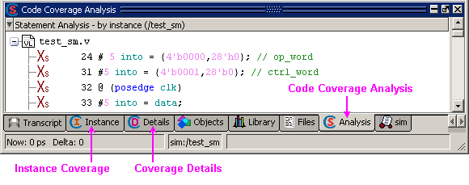
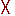
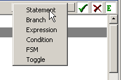
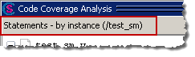
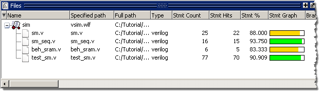

Load and Run the Design
Procedure
- Load
the design.
- Enter “vsim -coverage test_sm_opt” at the Questa SIM> prompt. (The optimized design is loaded.)
Three code coverage windows will open in the three main window groups: Code Coverage Analysis, Instance Coverage, and Coverage Details (Figure 1).
Figure 1. Code Coverage WindowsWithin the Code Coverage Analysis window you can perform statement, branch, condition, expression, FSM, and toggle coverage analysis. Each line in the Code Coverage analysis window includes an icon that indicates whether elements in the line (statements, branches, conditions, or expressions) were executed, not executed, or excluded. Table 1 displays the Code Coverage icons.
Table 1. Code Coverage Icons Icon
Description/Indication
All statements, branches, conditions, or expressions on a particular line have been executed

Multiple kinds of coverage on the line were not executed
True branch not executed (BC column)
False branch not executed (BC column)
Condition not executed (Hits column)
Expression not executed (Hits column)
Branch not executed (Hits column)
Statement not executed (Hits column)
Indicates a line of code to which active coverage exclusions have been applied. Every item on the line is excluded; none are hit.
Some excluded items are hit
Some items are excluded, and all items not excluded are hit
Some items are excluded, and some items not excluded have missing coverage
Auto exclusions have been applied to this line. Hover the cursor over the EA and a tool tip balloon appears with the reason for exclusion,
You can select the analysis you want to perform in the Analysis toolbar (Figure 2).
Figure 2. Analysis ToolbarYou can identify which analysis is currently open by the title bar in the Code Coverage Analysis window (Figure 3).
Figure 3. Title Bar Displays Current AnalysisBy default, Statement Analysis is displayed the first time the Code Coverage Analysis window opens. For subsequent invocations, the last-chosen analysis window is displayed.
- Run
the simulation
- Type “run 1 ms” at the VSIM> prompt.
- When
you load a design with Code Coverage enabled, Questa SIM adds several coverage data columns
to the Files and Structure (sim) windows (Figure 4). Use the horizontal scroll bar to
see more coverage data columns. (Your results may not match those
shown in the figure.)Figure 4. Code Coverage Columns in the Structure (sim) Window
- You
can open and close coverage windows with the View > Coverage menu selection.Figure 5. Coverage Menu

- All coverage windows can be re-sized, rearranged, and undocked to make the data more easily viewable. To resize a window, click-and-drag on any border. To move a window, click-and-drag on the header handle (three rows of dots in the middle of the header) or click and drag the tab. To undock a window you can select it then drag it out of the Main window, or you can click the Dock/Undock button in the header bar (top right). To redock the window, click the Dock/Undock button again.
- We will look at some of the coverage windows more closely in the next exercise.